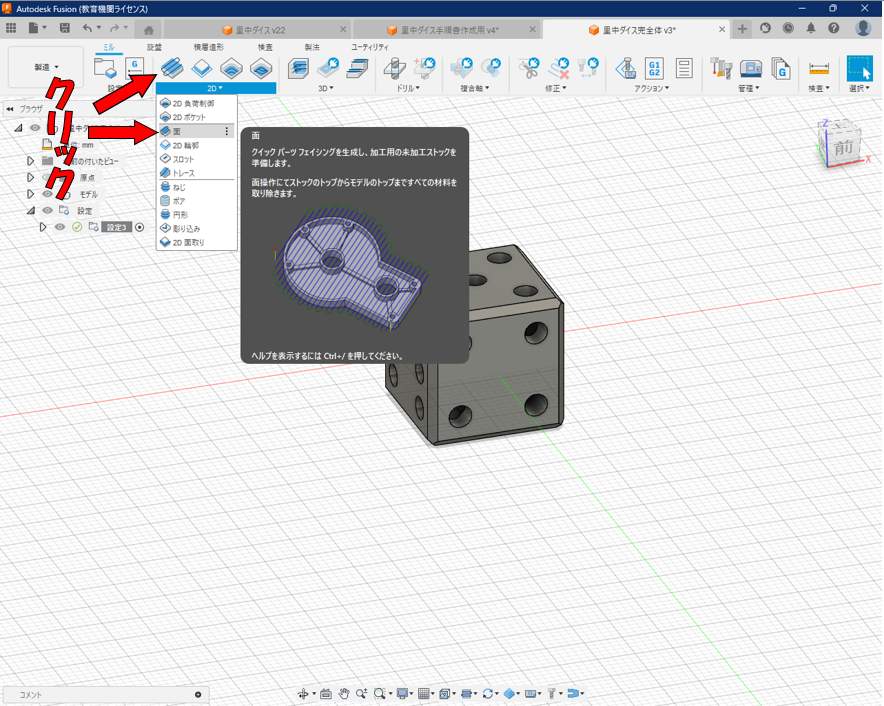
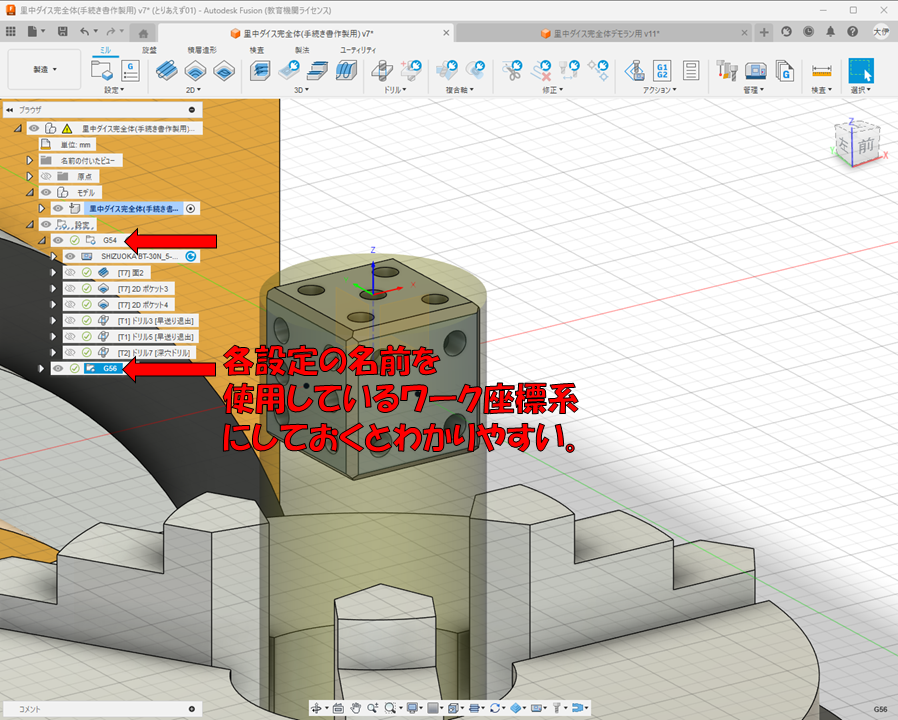
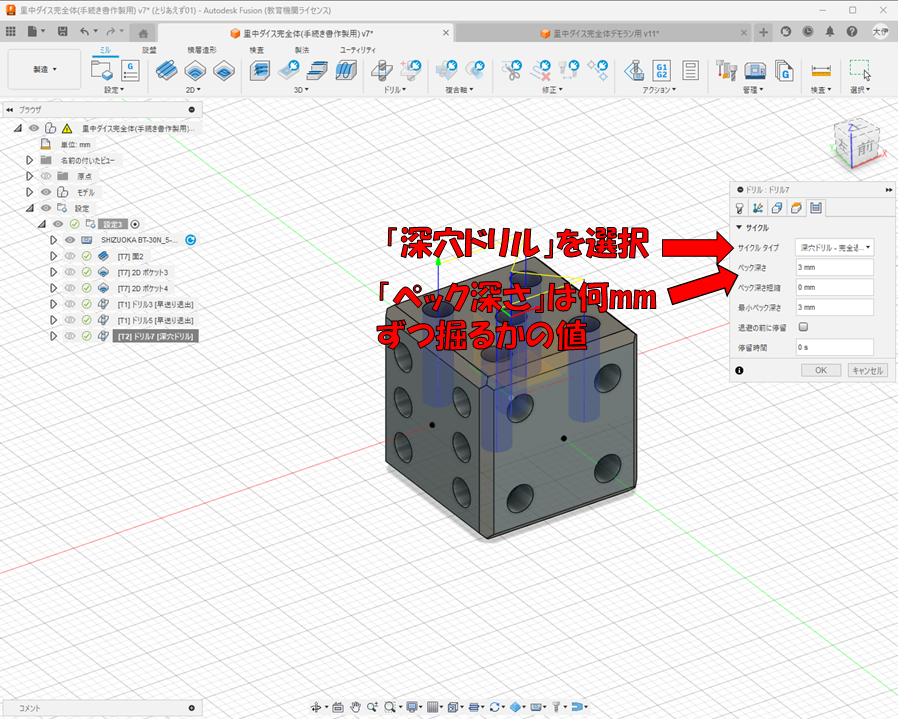

事前準備
今回はこのような、直径約25.5mmの円柱形の材料を一辺18mmの６面ダイスの形状に、 ５軸マシニングセンタで削る際の手順を説明していく。ここではCADモデリングの手順 は全て割愛し、CAMの操作手順のみ紹介する。設定の作成手順
削りたい形状のモデリングが終わったら、左上のボタンで、作業スペースを「デザイン」 から「製造」に切り替えて、設定を新規作成する。設定のウィンドウが開いたら、まずシミュレーションに使用する加工機を選択する。 設定タブのマシンと書かれた横の「選択」ボタンを押して、マシンライブラリウィン ドウから使用する加工機を選択する。
マシンを選択したら、設定タブの「操作タイプ」というところで、 加工のタイプを選ぶ。今回は５軸マシニングセンタでフライス加工を行うため、 ミルを選択。旋盤、切り取り、積層造形なども選択可能。
またワーク座標系の原点と方向も指定する。座標の方向はモデル方向のままでもよい。 必要なときは適宜変更する。ワーク座標系の原点としたい点を選んでクリックして 指定する。原点として設定したい点が無い場合は、作業スペースをデザインに戻し、 スケッチで任意の場所に点を作図してから、この設定に戻り、原点を指定するとよい。
次に、「ストック」タブではストックの形状と大きさを設定する。ストックとは、 削られる前の材料の形のことである。今回は円柱の丸棒材料を削るため、モードは 「固定サイズの円柱」を選択した。
「ストック直径」と「長さ」には削られる前の円柱材料の直径と長さを入力する。今回は 直径25.5mm、長さ60mmの鋳鉄丸棒材料を使用した。
「モデル位置」は「フロントからのオフセット」を選択。これを選ぶとストックの上面が 削った後のダイスの上面と一致する位置にストックが置かれる。
オフセットは、削った後のダイスの上面から削る前のストックの上面がどれだけ高いかを 指定する値で、今回は０に設定した。
次に「移動」タブに移り、加工機の固定具（チャック・万力・バイスなど）に材料を 固定する位置を指定する。まず「パーツのアタッチ点」で「ストックボックス点」を 選択して、固定具の底面にストックの底面が一致するようにする。材料を固定具の 底面から正直台などで少し上げた位置で固定する際などは、下のX距離、Y距離、Z距離の 値を変更して材料の固定位置を調整する。
次に、「ポスト処理」タブに移り、使用するワーク座標系を設定する。このWCSオフセットの値は、 1と入力するとG54、2だとG55、3だとG56・・・というように対応している。今回、材料を 傾けずに加工する際はワーク座標系G54を使用すると仮定して、1と入力しておく。
以上で「設定」で操作しなくてはいけない手順は全てです。OKを押して設定を完了 すると選択した加工機の3Dモデルが出現する。

工具の新規作成方法
加工機の選択と基本設定ができたので、次に使用する工具（ドリルやエンドミルのこと。 刃物とも言う）を追加する。まず工具ライブラリを開く。
工具ライブラリが開いたら、ウィンドウ左側から「ローカル」の下にある「Library」 をクリック。この場所は自分で作成した工具が入る場所となっている。ここで＋のマーク のボタンを押し、工具の新規作成を行う。
まずこの画面が開くので、追加したい工具の種類を選択する。

「全般」タブでは詳細の所に工具の大まかな説明、直径や種類、どの加工機に 使うものなのかなどを入力。それ以外は俺もよくわからないので何も入力 しなくてよいと思う。

「刃物」タブでは、実際の工具をノギスなどで測定して、各寸法値を入力する。

「ホルダー」タブではその工具が取り付いているホルダーを選択する。 ウィンドウ左のホルダーの一覧から選んで、青いボタンでホルダーを選択する。
ちなみに、このホルダーも新規作成することができる。工具の種類を選択する画面 でホルダーを選択し、実際のホルダーの寸法をノギスなどで測定しながらこの 「ホルダー形状」タブで上から順番に高さと上側の直径と下側の直径を指定した 円錐・円柱を重ねていくようにホルダーの形状を作っていく。
Fusionライブラリに使いたいホルダーがなかったときは新規作成してみよう。

話を刃物の作成に戻して、「切削データ」タブではその工具の回転数や 切削送り速度などを入力する。切込み送り速度は切削送り速度より遅く、 ランプ送り速度はよくわからなかったら切込み送り速度と同じにするとよい。

「ポストプロセッサ」タブでは上から４つの箇所にその工具を加工機に 搭載するときの工具番号を入力する。
これで工具の作成は終了。工具が複数本ある場合は同じことをまた別の工具で繰り返す。
ツールパスの作成 面切削
設定が完了したので加工のツールパスを作成していく。ツールパスとは工具（エンドミルやドリル） の動きの軌跡のことである。まず材料の上面出しをするツールパスを作成する。切断した材料などは断面が荒く、 また錆や汚れが付着していて平らな面が出ていない。そのため材料を0.5mm程度高く 固定したりワーク座標原点を材料の上面より0.5mm程度低く設定したりしてZ=0.0mmの位置で エンドミルで切削することで平らできれいな面を出すことを「面を出す」という。
まず「ミル」タブの2Dの中の「面」加工をクリックする。 
面加工の小さいウィンドウが開いたらまず工具を選択する。工具の右の「選択」ボタンをクリックする。
するとこのような工具ライブラリウィンドウが開くので一覧から工具を選んで選択する。 自分で新規作成した工具などはローカルのLibraryにある。
工具を選択したら一つ右の「形状」タブに移るが、ここではストック輪郭を選択しない。 デフォルトの状態で、削る前の円柱の上面がストック輪郭として選択されているため、 このまま何もせず次に進む。
次は５つのうち左から４番目の「パス」タブに移り、以下画像の５か所の値を変更する。 「パス方向」はエンドミルが材料を削るときに進む向きの角度
「パス延長」は材料の大きさを超えてエンドミルが削り進む向きにオーバーランする距離
「ストックオフセット」は材料の大きさに対して入力した値だけ大きめに削る値
「切削ピッチ」はエンドミルが一度進むときに横方向にどれだけ材用に切り込むかの値
「方向」はエンドミルの進行方向から見て材料がミルの右か左どちらに当たるのかを選択できる。
ダウンカットは右、アップカットは左。面を出す加工ではこの方向による違いは微々たるものなので、 加工時間が短い両方向を選択している。
これで設定は終わりで、OKを押すと以下画像のようなツールパスが作成される。
ツールパスの作成 粗削り
次にまず、円柱を、面取りした四角柱に切削するツールパスを作成する。「ミル」タブの2Dより「2Dポケット」加工をクリックする。
2Dポケットの小さいウインドウが出たら、「工具」タブで先の上面出しの時と同じく 使用する工具を選択する。（詳しくはもう説明したため割愛） 次に「形状」タブに移り、「ポケット」削らず残す範囲の選択を行う。「チェーン」 選択ボタンを押した後「モード」の横の「開いたチェックボックス」ボタンを押して、 画像のように、ダイスを直上から見たときに外枠となる辺を選択していく。その後、「モード」の 「閉じたチェーン」ボタンを押して、閉じたチェーンにする。
ここまでやると、選択したチェーンの近くに小さい赤色の矢印が出現する。この矢印はこの線の 内側を削るのか、外側を削るのか、その削る方を示しており、今回はこの線の外側を切削して 四角柱にするので、矢印を外側にする。「リバース」チェックボックスで内と外を切り替えることができる。
次に「高さ」タブでウインドウ一番下の「ボトム高さ」のオフセット値を-5.5mmに変更する。 ボトム高さとは、工具で何mmの深さまで削るかの高さである。始点の「選択された輪郭」とは 先ほど形状タブで選択したチェーンのことであり、そこからオフセットの分だけ高さ方向にずれた 深さまで切削を行う。（-5.5mmなら選択したチェーンから5.5mm深くまで削る。）
なぜ-5.5mmかというと、このチェーン、ダイスの底面より0.5mm高い位置になっており、 また、加工の最後に丸棒からダイスを切り落とす際に直径5mmのエンドミルで削って落とすため、 チェーンより5.5mm深くまで削る必要がある。
次に、「パス」タブへ移り、各変更箇所を下の画像の通りに変更する。
【以下、各項目の内容の説明】
「横方向の補正」はエンドミルの進行方向から見て、材料の左右どちら側をエンドミルが 削るかを指定する箇所である。エンドミルの回転方向は時計周りであるため、エンドミルが 材料の左側を削るならダウンカット、右側を削るならアップカットとなる。基本的には エンドミルへの負担が少ないダウンカット（左）を選択することが多い。
「両方向」にチェックを入れると、先ほど指定した右・左に関係なく、加工時間が短くなるように 右と左両方向にエンドミルが動くツールパスが生成されるようになる。今回はダウンカットのみを 使いたいのでチェックは外している。
「最大切削ピッチ」はエンドミルで材料を削る際に横方向に何mmずつ削るかの値で、一般的には 1~2mm程度である。大きくしすぎると工具に負担がかかる。
「複数深さ」は今回のように削る範囲が上下方向に大きい場合に、指定した長さずつ削りたい 時に使用する。
「最大粗取り切込みピッチ」は深さ何mmずつ削っていくかを指定する値で、今回は5mmずつ 削るよう指定した。
これでこのツールパスの設定項目は以上。OKを押すと以下のようなツールパスが作成される。
ツールパスの作成 45°斜め切削
次に、材料を45度傾けた状態で、ダイスの上面と底面の45°面取りの加工をするツールパスを作成する。さきほどまでは、材料を傾けない状態での加工で、ワーク座標系G54を使用していたが、45度傾けてでの 加工では別のワーク座標系を使用する。
このために新しく設定をもう１つ新規作成する。まず「設定」アイコンをクリック
設定タブでモデルの選択ボタンをクリックして、サイコロのモデルのコンポーネントをクリックして選択する。
パーツの位置タブでの設定項目は、一番最初に作った設定と全く同じにする。
ポスト処理タブに移り、WCSオフセットで、使用するワーク座標系を選択する。先の設定ではG54を使用する 想定だったので１だったが、今回はG56を使用すると仮定して、3と入力しておく。
OKを押して設定を作ったあと、設定の名前を使用しているワーク座標系にしておくとわかりやすい。 
設定ができたら、作業スペースを「デザイン」に変更して、いくつかスケッチを作成する。まずはスケッチでダイスの 立方体の中心に点を作図する。手順は以下画像参照。

次に、「ここからここまでの範囲を切削する」という範囲をスケッチしていく。 ななめ45度に材料を傾けて加工するため、45度傾いたスケッチが描きたい。そのためにまず 「構築」から「傾斜平面」をクリックして、画像のように辺を選択して45度傾いた面を生成する。
作成した45度の面にスケッチをする。下の画像のような２つの四角形をスケッチする。

スケッチが終わったら再び作業スペースを製造に戻して「2Dポケット」をクリック。
形状タブで、まず「工具方向」にチェックを入れる。ここでは材料に対する工具の角度を 変更することができる。今回は45度傾けた角度に変更する。
画像の通り、「Z軸」はエンドミルと直交する角度の面を選択、X軸は工具が傾いたときに X軸の方向に直交する面を選択する。
工具を傾けたときの原点も別途選択できる。「選択された点」を選択して、「工具方向の原点」 を先ほどスケッチした、立方体の中心の点を選択する。選択できないときは、スケッチが非表示に なっている可能性があるので、画面左のツリーからスケッチを表示させる。
次にタブはそのまま、ポケット（削らず残す範囲）をを選択する。「チェーン」ボタンをクリックし、 モードは「閉じたチェーンのまま、先ほどスケッチした四角形のうち、内側の小さいほうを選択する。 そして小さい赤い矢印が四角形より外側にあるようにする。確認したらOKを押す。
次に、エンドミルで削り取る範囲を選択する。「ストック輪郭」のチェックボックスにチェックを入れる。 ポケットの選択と同じく、「チェーン」ボタンを押して、「閉じたチェーン」のまま、 今度は外側の四角形を選択する。そして小さな赤い矢印が、今度は四角形より内側に来るようにする。 この矢印はエンドミルが通る位置を表すからだ。できたらOKを押す。
パスタブに変更し、最大切削ピッチを2mm以上にしたら、OKをおす。以下の画像のようなツールパスが 作成されるはずだ。
以上の手順をあと３回、残った３つの面に対しても行うと、上下8つの辺の面取り加工の ツールパスが完成する。のこり３つは割愛する。
ツールパスの作成 ドリル穴開け加工
次に、サイコロの目の穴を開ける加工のツールパスの作成方法について説明する。まず画面上のアイコンから、「ドリル」をクリックする。
右に小さいウィンドウが出たら、まず工具の「選択」ボタンをクリックする。
ドリルの一覧が表示されるので使用するドリルを選択する。ここではセンタドリルを選択して、下穴の加工を行う。
「形状」タブに移り、「選択モード」を「選択された点」にする。開ける穴の口のエッジの円をクリックすると その円の中心点が穴を開ける点として選択される。５つの円全てを選択する。

「高さ」タブに移り、下の画面と同じように始点とオフセット値を決定する。一応各設定箇所について説明しておく。
ボトム高さは穴を何mmの深さまで掘るかの高さを指定する。
トップ高さは何mmの高さから掘り始めるのかの高さを指定する。穴を開ける前の材料の上面の高さになるようにする。
送り高さ、退避高さ、移動高さはすべてトップから5mm上になっているが、これは今回使用する想定の 静岡鐵工所製BT-30N型５軸マシニングセンタがZの高さの可動範囲が極めて小さいために材料から5mm上になっている。 もっと大型の加工機であればもっと高い位置に設定したほうがよい。
各高さは、始点で基準点を決めてそこからオフセットに入力した値だけ高い場所が指定される。

「パス」タブに移り、サイクルタイプを「早送り退出」にする。
今回はセンタドリルによる下穴開けの加工で、深さも2mmしかないので、早送り退出で加工を行う。
OKボタンを押すとこのように、緑色で穴を開けた後の形状が表示されるはず。
次に、側面に穴を開けていきます。今度は材料を90度倒すので、また別のワーク座標系を使います。
斜め45度で切削した時と同じくまた設定を作ります。設定アイコンクリック。先ほどの45度切削の際にG56ワーク座標系の設定を つくったのと同じ手順で操作して、ポスト処理タブでWCSオフセットを2に設定します。（G55を使用すると仮定しています）
設定ができたら、側面に穴を開ける際のワーク座標原点をサイコロの側面の中央に設定したいのですが、 ４の面と６の面には中央に穴が無く点を選択できないので、一度製造からデザインに戻って、４の面と６の面の中央に点を スケッチしておいてください。
そうしたらまた製造に戻って、ドリルをクリック。

先ほど５の面を加工した直後なので引き続きセンタドリルが選択されているはずです。
「複合軸」タブに移って、「工具方向」にチェックを入れます。ここでは工具（材料）の向きを指定できます。 今度は材料の側面に穴をあけるので、材料を90度傾けることになります。そのときの加工機の様子をイメージしながら、 Z軸のすぐ右のボタンを押してZ軸と垂直になる面、X軸のすぐ右のボタンを押してX軸と垂直になる面を選択してください。
また、このときのワーク座標原点をどこにするのかも指定してください。
そのほかのタブでの操作は先ほど５の面の穴あけのときと同じです。画面の通りにしてください。
OKを押すとこのようになるはずです。その他、３、４、１の面に関しては今での手順と全く同じであるため、割愛します。
次に、さっきセンタドリルであけた穴と全く同じ位置に、直径3mmの普通のドリルで深さ10mmの穴を開けていきます。
同じく、「ドリル」アイコンをクリックしてドリル穴あけ加工のウインドウを出したら、工具の選択で直径3mmのドリルを選択します。 なければ新規作成してください。工具の新規作成方法参照です。
複合軸タブ、形状タブは今までと全く同じ手順なので割愛します。
高さタブのボトム高さの所で、穴の深さだけ、10mmに変更しておいてください。
また、パスタブでサイクルタイプを「深穴ドリル 完全退避」などの、深い穴を開けるときの、退避動作があるものに変更してください。 ペック高さは何mmずつ掘り進むかの値なので、ペック高さに入力した分だけ掘り進めるごとに退避運動を行います。
加工機や穴の形状、使う工具や削る材料などに応じて適切な値を入力してください。 
側面にも3mmのドリルで穴を開けていきますが、穴の深さとサイクルタイプ以外は全てさっきのセンタドリルと全く同じ手順なので割愛します。
同じようにG55ワーク座標系を使用するための設定を新規作成してから工具方向を90度傾けて穴を選択して高さを指定してください。